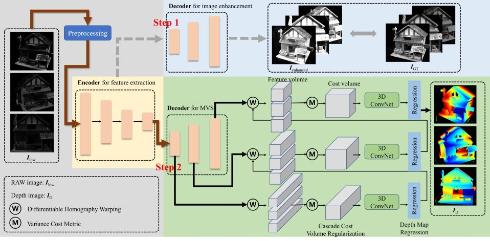
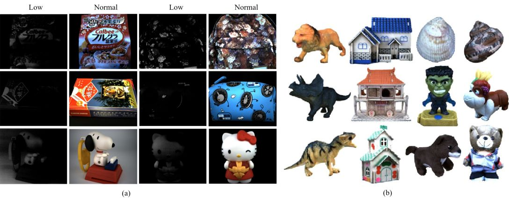
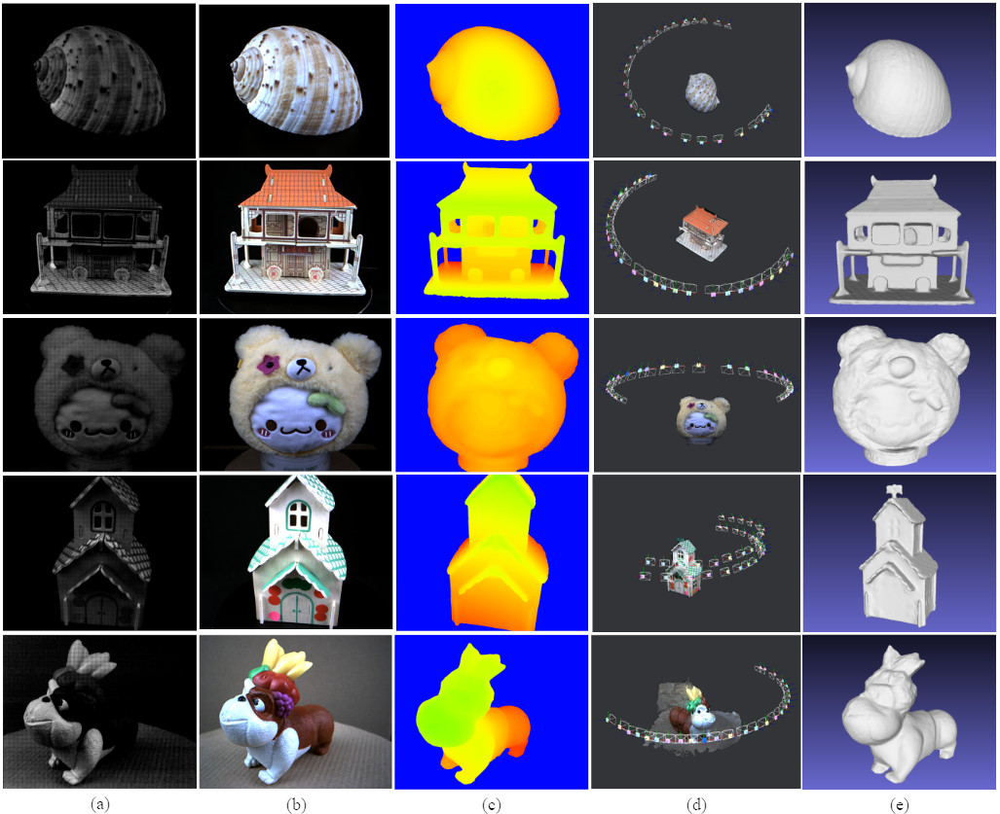

IEEE Transactions on Instrumentation and Measurement (TIM)
LoliMVS: An End-to-End Network for Multiview Stereo With Low-Light Images
Qingfang Jiang1,2

Overview of LoliMVS.
In the training stage, the processing is divided into two steps. In step 1, an encoder-decoder network is trained with RAW low-light images and ground-truth images. We then fix the feature extraction encoder in step 1 and train the coarse-to-fine decoder for inferring the depth maps in step 2. In the inference stage, we adopt the encoder and decoder for MVS to reconstruct the point cloud model. Abstract
Performing multi-view stereo (MVS) reconstruction under low-light environment is challenging. Different from traditional MVS methods that work with images captured under normal lighting conditions, we focus on reconstructing 3D models in low-light situations. To address this, we propose a learning-based MVS framework consisting of two steps: low-light image enhancement and MVS reconstruction. At first, we adopt an encoder-decoder network to enhance the low-light images, making them more visually discernible. Then, the encoder is fixed and shared, facilitating to train a decoder for MVS reconstruction. To validate our approach, we have created a new dataset called
LoLi100
, specifically designed for low-light reconstruction. In our experiments, we train and test our method on this dataset, demonstrating that our pipeline generates 3D models with fine details and clear texture. Compared to other methods, our approach significantly improves completeness and overall quality of the depth maps. The dataset is publicly available at the webpageLoLi100 Dataset
The
LoLi100
dataset consists of two main parts: the RAW low-light data and normal lighting data, which serves to be utilized for training the low-light image enhancement submodule and the MVS reconstruction submodule. The first part of the dataset contains 3231 pairs of low-light and normal-light images, representing the RAW sensor data. The second part consists of 74 objects, each captured from about 30 viewpoints. For each object, we provide cleaned images under both low-light and normal-light conditions, along with camera parameters and rendered depth maps.
The rights to copy, distribute, and use the dataset are being given access to are under the control of Yangang Wang, director of the Vision and Cognition Lab, Southeast University. In this case, credit must be given to: *LoliMVS: An End-to-End Network for Multiview Stereo With Low-Light Images*. Any commercial use is not allowed
.

As for the RAW data, you can use the following C++ code (with OpenCV) to read the Bayer
image (low-light)
cv::Mat image(cv::Size(1280, 1024), CV_8UC1);
FILE* file = nullptr;
fopen_s(&file, "xxxx.raw", "rb");
fread_s(image.data, image.cols * image.rows, sizeof(uchar), image.cols * image.rows, file);color
image (normal lighting)
cv::Mat image(cv::Size(1280, 1024), CV_8UC3);
FILE* file = nullptr;
fopen_s(&file, "xxxx.raw", "rb");
fread_s(image.data, image.cols * image.rows * 3, sizeof(uchar) * 3, image.cols * image.rows, file);Results

Reference
Yangang Wang, Qingfang Jiang. "LoliMVS: An End-to-End Network for Multiview Stereo With Low-Light Images". IEEE Transactions on Instrumentation and Measurement, 73:5008111, 2024.
Acknowledgments: This work was supported by the National Natural Science Foundation of China (No. 62122038 and 62076061), Natural Science Foundation of Jiangsu Province (No. BK20220127 and BK20211565).